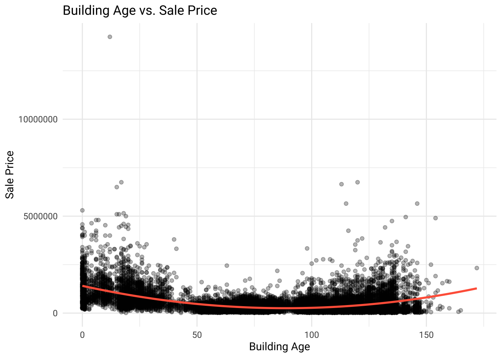
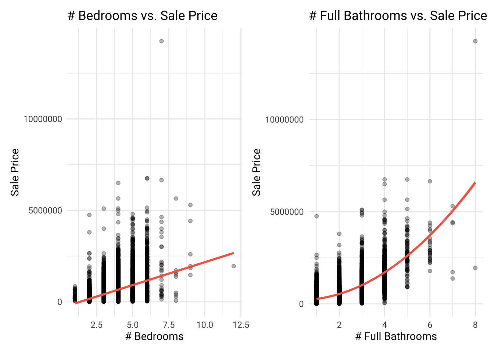
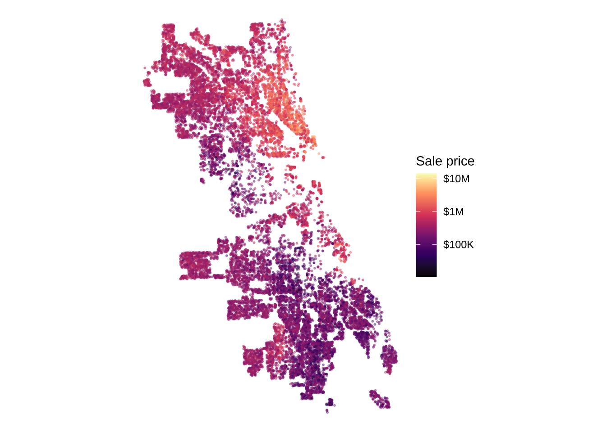
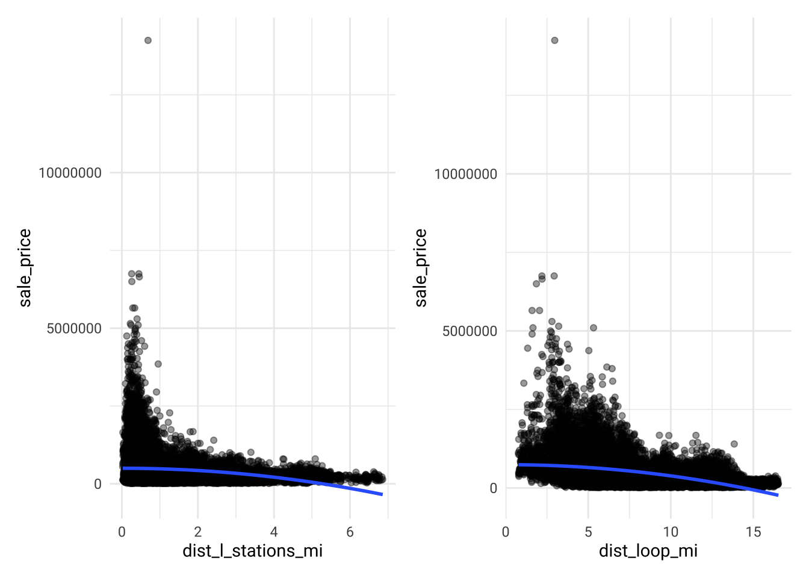
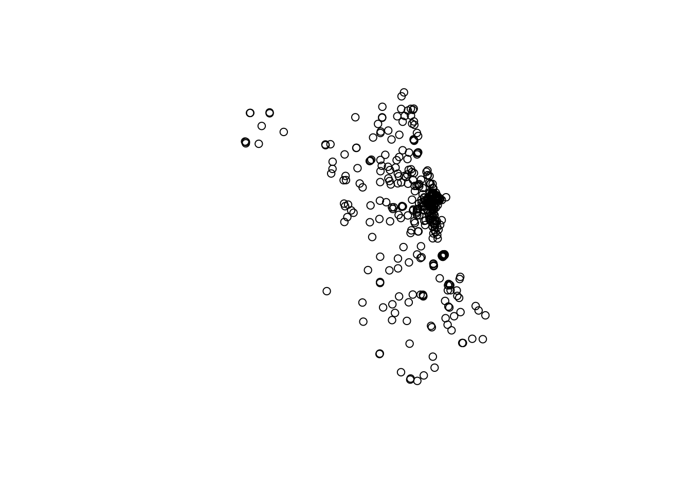
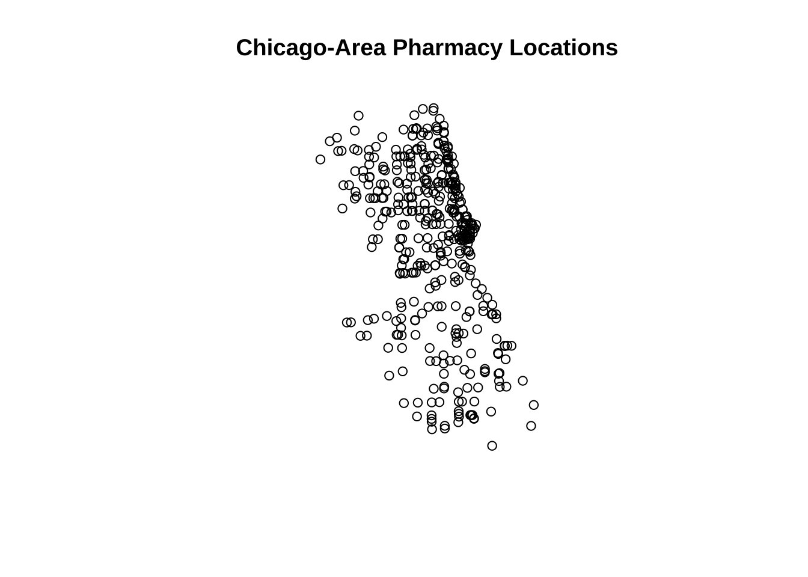
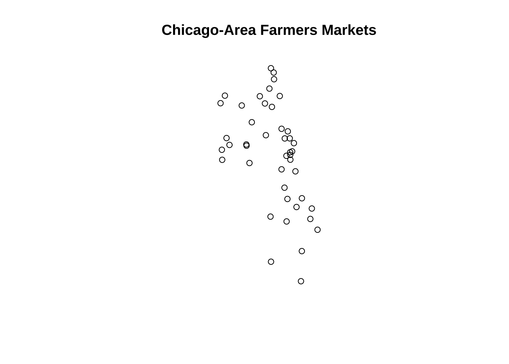
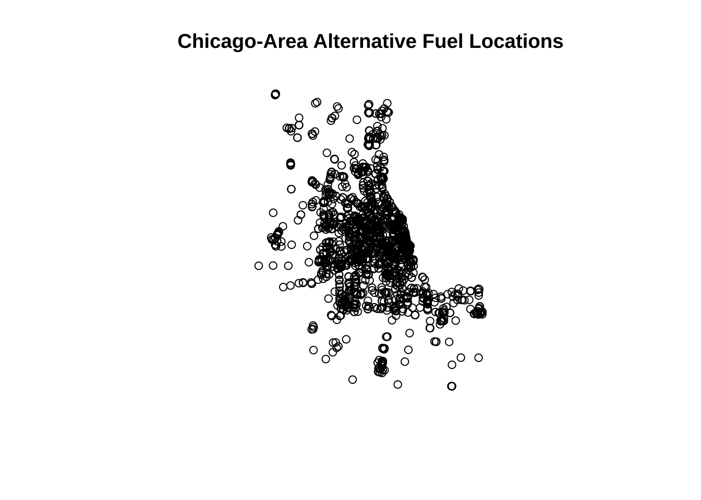
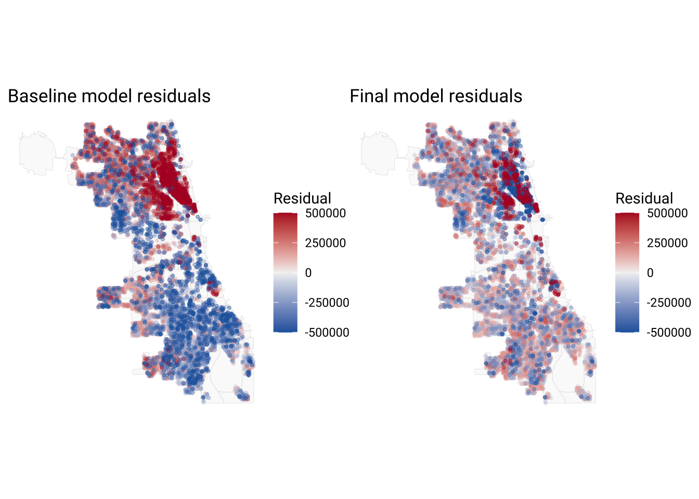

Code
library(tidyverse)
library(tidycensus)
library(sf)
library(caret)
library(spdep)
library(nngeo)
library(patchwork)
library(showtext)
options(scipen = 999)
font_add_google("Roboto", family = "roboto")
showtext_auto()MUSA 5080 · Team assignment
Team Minecraft: Michael Pincus, Isaac Tan, Nathan Leroy
October 30, 2026
In class we built a house price model for Philadelphia. Now your team does it for a city you haven’t modeled: Chicago.
The Cook County Assessor’s Office has to value every home in the county, including the vast majority that didn’t sell this year. Assessments drive property tax bills. When they’re wrong in a systematic way, some households pay more than their share. A 2017 Chicago Tribune investigation, “The Tax Divide,” found exactly that in Cook County: lower-value homes were assessed at higher shares of their worth than expensive ones.
Build a model that predicts single-family sale prices in Chicago, 2023–2025, using only the tools from this course. The file contains only features of the house itself. Everything about location is yours to build.
| File | What’s in it |
|---|---|
chicago_train.csv |
About 80% of the houses, with sale prices |
chicago_test.csv |
The other 20%, without sale prices. You predict them; we score you. |
The test houses were held out by house, not by sale, so a house that sold twice is entirely on one side. Your CV RMSE is your estimate. Your test RMSE is the truth. If they’re far apart, something leaked.
Due: Friday, October 30. All teammates renders the file on their portfolio and every member submits that link on Canvas. One teammate uploads team_XX_predictions.csv.
Individual accountability: Q7 on October 30 asks each of you about this model: which features you used and why, your CV and test RMSE, and where the model fails worst. Make sure everyone can explain all of it.
You must predict every test house, so fill NAs in a feature rather than filtering.
Open data from 2023–2025 only.
Nothing built from sale prices. Would the Assessor have this number for a house that didn’t sell?
Transform predictors, not sale_price.
No features built from other houses’ sale prices.
| Model log | Every model you tried, in order, with CV RMSE and Moran’s I. Each row has a note saying why you tried it. |
| Features | Incorporate the feature engineering tricks - including the spatial ones covered these past few weeks. |
| Diagnostics | Residual maps for your baseline and final model, and what changed. |
| Error analysis | Where your final model fails worst, and whose homes it over-values (Part 4). |
| Reasoning | Choices justified by evidence from your own analysis. |
These helpers are to help you get off the ground.
check_na <- function(formula, df) {
vars <- all.vars(formula)
bad <- vars[sapply(vars, function(v) any(is.na(df[[v]])))]
if (length(bad) > 0) {
stop("These variables have NAs: ", paste(bad, collapse = ", "),
". Fill them or choose another variable (Rule 1).")
}
}
# 10-fold CV RMSE, same folds every time
cv_rmse <- function(formula, data) {
df <- if (inherits(data, "sf")) st_drop_geometry(data) else data
check_na(formula, df)
set.seed(5080)
fit <- train(formula, data = df, method = "lm",
trControl = trainControl(method = "cv", number = 10))
fit$results$RMSE
}
# Each house's prediction from the fold where it was held out
cv_pred <- function(formula, data) {
df <- if (inherits(data, "sf")) st_drop_geometry(data) else data
check_na(formula, df)
set.seed(5080)
fit <- train(formula, data = df, method = "lm",
trControl = trainControl(method = "cv", number = 10,
savePredictions = "final"))
fit$pred %>% arrange(rowIndex) %>% pull(pred)
}
# Chicago Data Portal (Socrata) -> sf. `where` is a SoQL filter.
socrata_get <- function(dataset, where, select = NULL, limit = 200000) {
where <- str_squish(where)
q <- paste0("$where=", URLencode(where, reserved = TRUE), "&$limit=", limit)
if (!is.null(select)) q <- paste0(q, "&$select=", URLencode(str_squish(select), reserved = TRUE))
url <- paste0("https://data.cityofchicago.org/resource/", dataset, ".geojson?", q)
tmp <- tempfile(fileext = ".geojson")
resp <- tryCatch(download.file(url, tmp, quiet = TRUE), error = function(e) e)
if (inherits(resp, "error")) stop("Portal request failed. Open this URL in a browser to see why:\n", url)
st_read(tmp, quiet = TRUE)
}Build every feature on all_sales, so training and test houses get identical features. Split off train again whenever you add something.
all_sales <- bind_rows(
read_csv("data/chicago_train.csv", show_col_types = FALSE) %>% mutate(split = "train"),
read_csv("data/chicago_test.csv", show_col_types = FALSE) %>% mutate(split = "test")
) %>%
st_as_sf(coords = c("lon", "lat"), crs = 4326) %>%
st_transform(3435) # Illinois East State Plane, feet
all_sales %>% st_drop_geometry() %>% count(split)# A tibble: 2 × 2
split n
<chr> <int>
1 test 5789
2 train 23200Useful sources: the Chicago Data Portal (find a dataset’s ID under its API button), the Census via tidycensus, and Cook County’s open data.
Decide which training sales are market sales. Record each rule, why, and how many it removed. Then explore: at least four plots, including a map of price.
Because is_multisale denotes sales consisting of more than one house, this was filtered out.
[1] 27477We then searched for remaining predictors with NA values:
id sale_date year sale_qrt
FALSE FALSE FALSE FALSE
sale_price is_multisale building_000sf building_age
TRUE FALSE FALSE FALSE
lotsize_acre num_bedrooms num_full_baths num_half_baths
TRUE FALSE FALSE TRUE
num_fireplaces garage_size central_air one_story
TRUE TRUE FALSE FALSE
full_basement finished_basement brick_stone_ext warmairfurnace
TRUE FALSE FALSE TRUE
split geometry
FALSE FALSE Predictors with NA values included lotsize_acre, num_half_baths, num_fireplaces, garage_size, full_basement, and warmairfurnace.
For the amenity features, we replaced NA values with zero:
For the NA value in lotsize_acre, we inspected the record, and then decided to impute its area from nearby values.
Simple feature collection with 1 feature and 21 fields
Geometry type: POINT
Dimension: XY
Bounding box: xmin: 1179321 ymin: 1826659 xmax: 1179321 ymax: 1826659
Projected CRS: NAD83 / Illinois East (ftUS)
# A tibble: 1 × 22
id sale_date year sale_qrt sale_price is_multisale building_000sf
* <dbl> <chr> <dbl> <dbl> <dbl> <dbl> <dbl>
1 24523 May 28, 2025 2025 2 230000 0 1.71
# ℹ 15 more variables: building_age <dbl>, lotsize_acre <dbl>,
# num_bedrooms <dbl>, num_full_baths <dbl>, num_half_baths <dbl>,
# num_fireplaces <dbl>, garage_size <dbl>, central_air <dbl>,
# one_story <dbl>, full_basement <dbl>, finished_basement <dbl>,
# brick_stone_ext <dbl>, warmairfurnace <dbl>, split <chr>,
# geometry <POINT [US_survey_foot]>na_idx <- which(is.na(all_sales$lotsize_acre))
known <- all_sales[!is.na(all_sales$lotsize_acre), ]
k <- 5
nn <- st_nearest_feature
library(nngeo)
neighbors <- st_nn(all_sales[na_idx, ], known, k = k, returnDist = FALSE)
all_sales$lotsize_acre[na_idx] <- sapply(neighbors, function(i) median(known$lotsize_acre[i]))With data cleaning done, we then moved to exploring the rest of our data.
library(patchwork)
ggplot(all_sales) +
geom_point(aes(x = building_age, y = sale_price), alpha=0.3) +
geom_smooth(aes(x = building_age, y = sale_price), method = 'lm', color = 'tomato1', formula=y~x+I(x^2)) +
labs(title='Building Age vs. Sale Price',
x='Building Age', y='Sale Price') + theme_minimal(base_family='roboto')
p1 <- ggplot(all_sales) +
geom_point(aes(x = num_bedrooms, y = sale_price), alpha=0.3) +
geom_smooth(aes(x = num_bedrooms, y = sale_price), method = 'lm', color = 'tomato1', formula=y~x) +
labs(title='# Bedrooms vs. Sale Price',
x='# Bedrooms', y='Sale Price') + theme_minimal(base_family='roboto')
p2 <- ggplot(all_sales) +
geom_point(aes(x = num_full_baths, y = sale_price), alpha=0.3) +
geom_smooth(aes(x = num_full_baths, y = sale_price), method = 'lm', color = 'tomato1', formula=y~x+I(x^2)) +
labs(title='# Full Bathrooms vs. Sale Price',
x='# Full Bathrooms', y='Sale Price') + theme_minimal(base_family='roboto')
p1 + p2

Answer: What in your exploration shaped your modeling choices?
Your answer: The primary decision made in our modeling choices was to square the building_age term. Even though the bedrooms and bathrooms graph had a curved line, we didn’t really buy a non-linear relationship between those predictors and sale_price.
Start with a structure-only baseline. Then add features in steps you can learn from, logging each one. Keep the log in a tibble with columns model, added, cv_rmse, moran_i, notes.
Function for Moran’s \(I\) of the residuals. NOTE: Distance bands were used to handle instances of identical points (such as condos in the same building)
moran_resid <- function(formula, data, k = 8) {
mod <- lm(formula, data = data)
# Spatial weights matrix
coords <- st_coordinates(st_centroid(st_geometry(data)))
nb <- dnearneigh(coords, d1 = 0, d2 = 500)
lw <- nb2listw(nb, style = "W", zero.policy = TRUE)
moran.test(residuals(mod), lw, zero.policy = TRUE)
# Moran's I of residuals
mt <- moran.test(residuals(mod), lw)
unname(mt$estimate["Moran I statistic"])
}# A tibble: 1 × 5
model added cv_rmse moran_i notes
<chr> <chr> <dbl> <dbl> <chr>
1 m1 Baseline 293371. 0.401 "" # A tibble: 2 × 5
model added cv_rmse moran_i notes
<chr> <chr> <dbl> <dbl> <chr>
1 m1 Baseline 293371. 0.401 ""
2 m2 Squared building age 291167. 0.415 "" Reading layer `OGRGeoJSON' from data source
`https://data.cityofchicago.org/api/v3/views/3tzw-cg4m/query.geojson?accessType=DOWNLOAD'
using driver `GeoJSON'
Simple feature collection with 145 features and 18 fields
Geometry type: POINT
Dimension: XY
Bounding box: xmin: -87.90185 ymin: 41.72238 xmax: -87.60586 ymax: 42.07315
Geodetic CRS: WGS 84all_sales_pts <- st_point_on_surface(all_sales)
l_stations_nearest_idx <- st_nearest_feature(all_sales_pts, l_stations)
all_sales <- all_sales %>%
mutate(dist_l_stations_mi = as.numeric(
st_distance(all_sales_pts, l_stations[l_stations_nearest_idx, ], by_element = TRUE)) / 5280)
loop <- st_sfc(st_point(c(-87.6276, 41.8782)), crs = 4326) %>%
st_transform(st_crs(all_sales))
all_sales <- all_sales %>%
mutate(dist_loop_mi = as.numeric(st_distance(all_sales_pts, loop)) / 5280)p1 <- ggplot(all_sales, aes(x = dist_l_stations_mi, y = sale_price)) +
geom_point(alpha=0.4) +
geom_smooth(method = "lm", formula = y ~ I(x^2)) + theme_minimal(base_family='roboto')
p2 <- ggplot(all_sales, aes(x = dist_loop_mi, y = sale_price)) +
geom_point(alpha=0.4) +
geom_smooth(method = "lm", formula = y ~ I(x^2)) + theme_minimal(base_family='roboto')
p1 + p2
# split into training
train <- all_sales |>
filter(split=='train')
f3 <- sale_price ~ building_age + I(building_age^2) + lotsize_acre + building_000sf + num_bedrooms + num_full_baths + dist_l_stations_mi
model_log <- model_log |>
add_row(model = "m3", added = "Added Distance to L Stations",
cv_rmse = cv_rmse(f3, train),
moran_i = moran_resid(f3, train),
notes = "Added Distance to L Stations")
model_log # A tibble: 3 × 5
model added cv_rmse moran_i notes
<chr> <chr> <dbl> <dbl> <chr>
1 m1 Baseline 293371. 0.401 ""
2 m2 Squared building age 291167. 0.415 ""
3 m3 Added Distance to L Stations 288865. 0.420 "Added Distance to L Stati…f4 <- sale_price ~ building_age + I(building_age^2) + lotsize_acre + building_000sf + num_bedrooms + num_full_baths + dist_l_stations_mi + dist_loop_mi
model_log <- model_log |>
add_row(model = "m4", added = "Added Distance to the Loop",
cv_rmse = cv_rmse(f4, train),
moran_i = moran_resid(f4, train),
notes = "Added Distance to the Loop")
model_log # A tibble: 4 × 5
model added cv_rmse moran_i notes
<chr> <chr> <dbl> <dbl> <chr>
1 m1 Baseline 293371. 0.401 ""
2 m2 Squared building age 291167. 0.415 ""
3 m3 Added Distance to L Stations 288865. 0.420 "Added Distance to L Stati…
4 m4 Added Distance to the Loop 285005. 0.429 "Added Distance to the Loo… [1] "ID" "HOUSE_NUMBER" "PRE_DIR"
[4] "STREET_NAME" "STREET_TYPE" "FULL_ADDRESS_RANGE"
[7] "BUILDING_NAME1" "BUILDING_NAME2" "MONTH_VIEW"
[10] "TOTAL_ROOF_SQFT" "VEGETATED_SQFT" "FACT_SHEET"
[13] "LATITUDE" "LONGITUDE" "LOCATION" # A tibble: 6 × 15
ID HOUSE_NUMBER PRE_DIR STREET_NAME STREET_TYPE FULL_ADDRESS_RANGE
<chr> <dbl> <chr> <chr> <chr> <chr>
1 123 11600 S MARSHFIELD AVE 11600-11750 S MARSHFIELD A…
2 355 5641 N KENMORE AVE 5641-5641 N KENMORE AVE
3 083 1307 W WRIGHTWOOD AVE 1307-1311 W WRIGHTWOOD AVE
4 310 115 W CHICAGO AVE 115-115 W CHICAGO AVE
5 216 651 E 38TH ST 651-651 E 38TH ST
6 223 3809 S VINCENNES AVE 3809-3809 S VINCENNES AVE
# ℹ 9 more variables: BUILDING_NAME1 <chr>, BUILDING_NAME2 <chr>,
# MONTH_VIEW <chr>, TOTAL_ROOF_SQFT <dbl>, VEGETATED_SQFT <dbl>,
# FACT_SHEET <chr>, LATITUDE <dbl>, LONGITUDE <dbl>, LOCATION <chr># Convert coordinates into spatial points
greenroof_lat_col <- "LATITUDE"
greenroof_lon_col <- "LONGITUDE"
greenroof_data <- greenroof_raw %>%
mutate(
.lat = as.numeric(.data[[greenroof_lat_col]]),
.lon = as.numeric(.data[[greenroof_lon_col]])
) %>%
filter(
is.finite(.lat), is.finite(.lon),
between(.lat, 41, 43),
between(.lon, -89, -87)
)
greenroofs <- st_as_sf(
greenroof_data,
coords = c(".lon", ".lat"),
crs = 4326,
remove = FALSE
) %>%
st_transform(st_crs(all_sales))
cat("Usable green roofs:", nrow(greenroofs), "\n")Usable green roofs: 359 
Min. 1st Qu. Median Mean 3rd Qu. Max.
0.01287 0.37667 0.61432 0.76543 0.94629 5.37033 [1] "Pharmacy Name"
[2] "Address"
[3] "City"
[4] "State"
[5] "Zip"
[6] "Hours"
[7] "24h store?"
[8] "Status"
[9] "If closed, reopening comments (if known)"
[10] "New Georeferenced Column" # A tibble: 6 × 10
`Pharmacy Name` Address City State Zip Hours `24h store?` Status
<chr> <chr> <chr> <chr> <dbl> <chr> <chr> <chr>
1 Heritage Pharmacy 2256 W Ros… Chic… IL 6.06e8 <NA> <NA> unkno…
2 Dr. Z's Pharmacy 4326 N Lin… Chic… IL 6.06e8 <NA> <NA> unkno…
3 Nimble Pharmacy 811 S West… Chic… IL 6.06e8 <NA> <NA> unkno…
4 RANDOLPHS RX PHARMACY 2751 W. 51… CHIC… IL 6.06e4 <NA> <NA> unkno…
5 NEW ENGLAND PHARMACY 6918 W ARC… CHIC… IL 6.06e8 <NA> <NA> unkno…
6 KOSIROG REXALL DRUGS 1000 N WES… CHIC… IL 6.06e8 <NA> <NA> unkno…
# ℹ 2 more variables: `If closed, reopening comments (if known)` <chr>,
# `New Georeferenced Column` <chr># Convert pharmacy geometry into points
pharmacy_wkt_col <- "New Georeferenced Column"
if (!pharmacy_wkt_col %in% names(pharmacy_raw)) {
stop(
"WKT column not found. Available columns: ",
paste(names(pharmacy_raw), collapse = ", ")
)
}
pharmacy_data <- pharmacy_raw %>%
filter(
!is.na(.data[[pharmacy_wkt_col]]),
grepl(
"^\\s*POINT\\s*\\(",
.data[[pharmacy_wkt_col]],
ignore.case = TRUE
)
)
# Convert WKT strings into spatial features (longitude/latitude, EPSG:4326)
pharmacies <- sf::st_as_sf(
pharmacy_data,
wkt = pharmacy_wkt_col,
crs = 4326
)
pharmacies <- pharmacies[
!sf::st_is_empty(pharmacies),
]
# Keep only Chicago-area locations
coords <- sf::st_coordinates(pharmacies)
in_chicago <- (
coords[, 1] >= -89 & coords[, 1] <= -87 &
coords[, 2] >= 41 & coords[, 2] <= 43
)
pharmacies <- pharmacies[in_chicago, ]
cat("Original pharmacy records:", nrow(pharmacy_raw), "\n")Original pharmacy records: 429 Valid Chicago-area pharmacies: 421 Number of pharmacy points: 421 Column names: [1] "Pharmacy Name"
[2] "Address"
[3] "City"
[4] "State"
[5] "Zip"
[6] "Hours"
[7] "24h store?"
[8] "Status"
[9] "If closed, reopening comments (if known)"
[10] "New Georeferenced Column" # A tibble: 6 × 9
`Pharmacy Name` Address City State Zip Hours `24h store?` Status
<chr> <chr> <chr> <chr> <dbl> <chr> <chr> <chr>
1 Heritage Pharmacy 2256 W Ros… Chic… IL 6.06e8 <NA> <NA> unkno…
2 Dr. Z's Pharmacy 4326 N Lin… Chic… IL 6.06e8 <NA> <NA> unkno…
3 Nimble Pharmacy 811 S West… Chic… IL 6.06e8 <NA> <NA> unkno…
4 RANDOLPHS RX PHARMACY 2751 W. 51… CHIC… IL 6.06e4 <NA> <NA> unkno…
5 NEW ENGLAND PHARMACY 6918 W ARC… CHIC… IL 6.06e8 <NA> <NA> unkno…
6 KOSIROG REXALL DRUGS 1000 N WES… CHIC… IL 6.06e8 <NA> <NA> unkno…
# ℹ 1 more variable: `If closed, reopening comments (if known)` <chr>[1] "POINT (1160478 1922538)" "POINT (1161123 1928788)"
[3] "POINT (1160527 1896278)" "POINT (1158688 1870735)"
[5] "POINT (1131121 1867308)" "POINT (1160196 1906611)"
Number of pharmacy locations: 421 if (nrow(pharmacies) == 0) {
stop("No pharmacy locations available. Re-run the pharmacy processing cell.")
}
nearest_idx <- sf::st_nearest_feature(all_sales, pharmacies)
# Convert to miles
all_sales$dist_pharmacy_mi <- as.numeric(
sf::st_distance(
all_sales,
pharmacies[nearest_idx, ],
by_element = TRUE
)
) / 5280
summary(all_sales$dist_pharmacy_mi) Min. 1st Qu. Median Mean 3rd Qu. Max.
0.01494 0.24596 0.38632 0.44812 0.56478 2.19867 [1] "LOCATION" "INTERSECTION" "DAY" "START TIME"
[5] "END TIME" "START DATE" "END DATE" "WEBSITE"
[9] "TYPE" "LINK ACCEPTED" "LATITUDE" "LONGITUDE"
[13] "Map" # A tibble: 6 × 13
LOCATION INTERSECTION DAY `START TIME` `END TIME` `START DATE` `END DATE`
<chr> <chr> <chr> <time> <time> <chr> <chr>
1 Edgewater Broadway & … Satu… 08:00 13:00 06/09/2012 10/13/2012
2 Homegrown … 343 E 51st … Sund… 09:00 13:00 06/10/2012 10/28/2012
3 Covenant B… 1111 S Homa… Wedn… 08:00 13:00 06/13/2012 10/10/2012
4 Jefferson … 5216 W Lawr… Sund… 10:00 14:00 06/24/2012 10/21/2012
5 Bridgeport 35th & Wall… Satu… 07:00 13:00 06/16/2012 10/06/2012
6 Glenwood S… 6950 N Glen… Sund… 09:00 15:00 06/03/2012 10/28/2012
# ℹ 6 more variables: WEBSITE <chr>, TYPE <chr>, `LINK ACCEPTED` <chr>,
# LATITUDE <dbl>, LONGITUDE <dbl>, Map <chr>farmers_lat_col <- "LATITUDE"
farmers_lon_col <- "LONGITUDE"
if (!all(c(farmers_lat_col, farmers_lon_col) %in% names(farmers_raw))) {
stop(
"Coordinate columns not found. Available columns: ",
paste(names(farmers_raw), collapse = ", ")
)
}
farmers_data <- farmers_raw %>%
mutate(
.lat = suppressWarnings(as.numeric(.data[[farmers_lat_col]])),
.lon = suppressWarnings(as.numeric(.data[[farmers_lon_col]]))
) %>%
filter(
is.finite(.lat),
is.finite(.lon),
between(.lat, 41, 43),
between(.lon, -89, -87)
)
farmers_markets <- sf::st_as_sf(
farmers_data,
coords = c(".lon", ".lat"),
crs = 4326,
remove = FALSE
)
farmers_markets <- sf::st_transform(
farmers_markets,
sf::st_crs(all_sales)
)
cat("Original records:", nrow(farmers_raw), "\n")Original records: 44 Usable Chicago-area farmers markets: 44 # A tibble: 6 × 15
LOCATION INTERSECTION DAY `START TIME` `END TIME` `START DATE` `END DATE`
<chr> <chr> <chr> <time> <time> <chr> <chr>
1 Edgewater Broadway & … Satu… 08:00 13:00 06/09/2012 10/13/2012
2 Homegrown … 343 E 51st … Sund… 09:00 13:00 06/10/2012 10/28/2012
3 Covenant B… 1111 S Homa… Wedn… 08:00 13:00 06/13/2012 10/10/2012
4 Jefferson … 5216 W Lawr… Sund… 10:00 14:00 06/24/2012 10/21/2012
5 Bridgeport 35th & Wall… Satu… 07:00 13:00 06/16/2012 10/06/2012
6 Glenwood S… 6950 N Glen… Sund… 09:00 15:00 06/03/2012 10/28/2012
# ℹ 8 more variables: WEBSITE <chr>, TYPE <chr>, `LINK ACCEPTED` <chr>,
# LATITUDE <dbl>, LONGITUDE <dbl>, Map <chr>, .lat <dbl>, .lon <dbl>[1] "POINT (1167207 1940329)" "POINT (1179374 1871241)"
[3] "POINT (1153910 1895033)" "POINT (1140617 1931456)"
[5] "POINT (1172869 1881699)" "POINT (1165526 1946287)"
Min. 1st Qu. Median Mean 3rd Qu. Max.
0.02015 0.80015 1.39801 1.69970 2.25172 6.83496 [1] "ID" "Fuel Type Code"
[3] "Station Name" "Street Address"
[5] "Intersection Directions" "City"
[7] "State" "ZIP"
[9] "Plus4" "Station Phone"
[11] "Status Code" "Expected Date"
[13] "Groups With Access Code" "Access Days Time"
[15] "Cards Accepted" "BD Blends"
[17] "NG Fill Type Code" "NG PSI"
[19] "EV Level1 EVSE Num" "EV Level2 EVSE Num"
[21] "EV DC Fast Count" "EV Other Info"
[23] "EV Network" "EV Network Web"
[25] "Geocode Status" "Latitude"
[27] "Longitude" "Date Last Confirmed"
[29] "Updated At" "Owner Type Code"
[31] "Federal Agency ID" "Federal Agency Name"
[33] "Open Date" "Hydrogen Status Link"
[35] "NG Vehicle Class" "LPG Primary"
[37] "E85 Blender Pump" "Location" # A tibble: 6 × 38
ID `Fuel Type Code` `Station Name` `Street Address` Intersection Directi…¹
<dbl> <chr> <chr> <chr> <chr>
1 19794 LPG U-Haul Moving … 1861 US Route 41 <NA>
2 19916 LPG U-Haul - Des P… 1560 Mount Pros… <NA>
3 19918 LPG U-Haul Moving … 2125 Dempster St <NA>
4 19919 LPG U-Haul Moving … 2915 W 159th St <NA>
5 19920 LPG U-Haul Moving … 8900 S Cicero A… <NA>
6 19924 LPG U-Haul Moving … 1700 N Cicero A… <NA>
# ℹ abbreviated name: ¹`Intersection Directions`
# ℹ 33 more variables: City <chr>, State <chr>, ZIP <dbl>, Plus4 <lgl>,
# `Station Phone` <chr>, `Status Code` <chr>, `Expected Date` <chr>,
# `Groups With Access Code` <chr>, `Access Days Time` <chr>,
# `Cards Accepted` <chr>, `BD Blends` <chr>, `NG Fill Type Code` <chr>,
# `NG PSI` <dbl>, `EV Level1 EVSE Num` <dbl>, `EV Level2 EVSE Num` <dbl>,
# `EV DC Fast Count` <dbl>, `EV Other Info` <lgl>, `EV Network` <chr>, …alt_lat_col <- "Latitude"
alt_lon_col <- "Longitude"
alt_fuel_data <- alt_fuel_raw %>%
mutate(
.lat = suppressWarnings(as.numeric(.data[[alt_lat_col]])),
.lon = suppressWarnings(as.numeric(.data[[alt_lon_col]]))
) %>%
filter(
is.finite(.lat),
is.finite(.lon),
between(.lat, 41, 43),
between(.lon, -89, -87)
)
alt_fuel <- sf::st_as_sf(
alt_fuel_data,
coords = c(".lon", ".lat"),
crs = 4326,
remove = FALSE
)
alt_fuel <- alt_fuel[
!sf::st_is_empty(alt_fuel),
]
alt_fuel <- sf::st_transform(
alt_fuel,
sf::st_crs(all_sales)
)
cat("Original records:", nrow(alt_fuel_raw), "\n")Original records: 2082 Usable Chicago-area alternative fuel locations: 2074 # A tibble: 6 × 40
ID `Fuel Type Code` `Station Name` `Street Address` Intersection Directi…¹
<dbl> <chr> <chr> <chr> <chr>
1 19794 LPG U-Haul Moving … 1861 US Route 41 <NA>
2 19916 LPG U-Haul - Des P… 1560 Mount Pros… <NA>
3 19918 LPG U-Haul Moving … 2125 Dempster St <NA>
4 19919 LPG U-Haul Moving … 2915 W 159th St <NA>
5 19920 LPG U-Haul Moving … 8900 S Cicero A… <NA>
6 19924 LPG U-Haul Moving … 1700 N Cicero A… <NA>
# ℹ abbreviated name: ¹`Intersection Directions`
# ℹ 35 more variables: City <chr>, State <chr>, ZIP <dbl>, Plus4 <lgl>,
# `Station Phone` <chr>, `Status Code` <chr>, `Expected Date` <chr>,
# `Groups With Access Code` <chr>, `Access Days Time` <chr>,
# `Cards Accepted` <chr>, `BD Blends` <chr>, `NG Fill Type Code` <chr>,
# `NG PSI` <dbl>, `EV Level1 EVSE Num` <dbl>, `EV Level2 EVSE Num` <dbl>,
# `EV DC Fast Count` <dbl>, `EV Other Info` <lgl>, `EV Network` <chr>, …[1] "POINT (1220617 1757330)" "POINT (1096293 1951368)"
[3] "POINT (1155376 1958241)" "POINT (1160626 1797658)"
[5] "POINT (1145753 1844986)" "POINT (1144080 1911102)"
Min. 1st Qu. Median Mean 3rd Qu. Max.
0.01439 0.44016 0.71501 0.78348 1.05446 2.77287 train <- all_sales %>%
filter(split == "train")
# Model 5
f5 <- sale_price ~
building_age + I(building_age^2) +
lotsize_acre + building_000sf +
num_bedrooms + num_full_baths +
dist_l_stations_mi + dist_loop_mi +
dist_greenroof_mi
model_log <- model_log %>%
add_row(
model = "m5",
added = "Distance to nearest green roof",
cv_rmse = cv_rmse(f5, train),
moran_i = moran_resid(f5, train),
notes = "Tests whether green-roof proximity improves prediction"
)
# Model 6
f6 <- update(f5, . ~ . + dist_pharmacy_mi)
model_log <- model_log %>%
add_row(
model = "m6",
added = "Distance to nearest pharmacy",
cv_rmse = cv_rmse(f6, train),
moran_i = moran_resid(f6, train),
notes = "Adds pharmacy proximity to the previous model"
)
# Model 7
f7 <- update(f6, . ~ . + dist_farmers_market_mi)
model_log <- model_log %>%
add_row(
model = "m7",
added = "Distance to nearest farmers market",
cv_rmse = cv_rmse(f7, train),
moran_i = moran_resid(f7, train),
notes = "Tests whether farmers-market proximity adds predictive value"
)
f8 <- update(f7, . ~ . + dist_alt_fuel_mi)
# Model 8
model_log <- model_log %>%
add_row(
model = "m8",
added = "Distance to nearest alternative fuel location",
cv_rmse = cv_rmse(f8, train),
moran_i = moran_resid(f8, train),
notes = "Tests the contribution of alternative-fuel proximity"
)# A tibble: 8 × 5
model added cv_rmse moran_i notes
<chr> <chr> <dbl> <dbl> <chr>
1 m1 Baseline 293371. 0.401 ""
2 m2 Squared building age 291167. 0.415 ""
3 m3 Added Distance to L Stations 288865. 0.420 "Added Di…
4 m4 Added Distance to the Loop 285005. 0.429 "Added Di…
5 m5 Distance to nearest green roof 284280. 0.427 "Tests wh…
6 m6 Distance to nearest pharmacy 283514. 0.426 "Adds pha…
7 m7 Distance to nearest farmers market 283383. 0.424 "Tests wh…
8 m8 Distance to nearest alternative fuel location 282710. 0.426 "Tests th…Reading layer `Chicago_Community_areas' from data source
`/Users/nathanleroy/Documents/MUSA/MUSA-5080-portfolio/data/Chicago_Community_areas.geojson'
using driver `GeoJSON'
Simple feature collection with 77 features and 21 fields
Geometry type: MULTIPOLYGON
Dimension: XY
Bounding box: xmin: -87.94012 ymin: 41.64455 xmax: -87.52414 ymax: 42.02304
Geodetic CRS: WGS 84After visual inspection, the NAs in the dataset were edge cases. Therefore, we decided to interpolate the values with the nearest neighborhood.
[1] 0Show your final model, the model log, and baseline vs. final residual maps.
train <- all_sales |>
filter(split == "train")
f_final <- sale_price ~ building_age + I(building_age^2) + lotsize_acre +
building_000sf + num_bedrooms + num_full_baths + dist_l_stations_mi +
dist_loop_mi + dist_alt_fuel_mi + community
model_log <- model_log %>%
add_row(
model = "m_final",
added = "Fixed neighborhood effect",
cv_rmse = cv_rmse(f_final, train),
moran_i = moran_resid(f_final, train),
notes = "Added fixed effect based on Chicago Community Areas"
)
model_log# A tibble: 9 × 5
model added cv_rmse moran_i notes
<chr> <chr> <dbl> <dbl> <chr>
1 m1 Baseline 293371. 0.401 ""
2 m2 Squared building age 291167. 0.415 ""
3 m3 Added Distance to L Stations 288865. 0.420 "Added …
4 m4 Added Distance to the Loop 285005. 0.429 "Added …
5 m5 Distance to nearest green roof 284280. 0.427 "Tests …
6 m6 Distance to nearest pharmacy 283514. 0.426 "Adds p…
7 m7 Distance to nearest farmers market 283383. 0.424 "Tests …
8 m8 Distance to nearest alternative fuel location 282710. 0.426 "Tests …
9 m_final Fixed neighborhood effect 226544. 0.240 "Added …m_final <- lm(f_final, data = train)
m_baseline <- lm(f1, data = train)
add_resid <- function(data, model, name) {
r <- residuals(model)
data[[name]] <- NA_real_
data[[name]][match(names(r), rownames(data))] <- unname(r)
data
}
train <- train |>
add_resid(m_final, "resid_final") |>
add_resid(m_baseline, "resid_base")
map_resid <- function(var, title, data = train, basemap = zones) {
ggplot() +
geom_sf(data = basemap, fill = "grey98", color = "grey85", linewidth = 0.1) +
geom_sf(
data = data[order(abs(data[[var]])), ],
aes(color = .data[[var]]),
size = 0.8, alpha = 0.4
) +
scale_color_gradient2(
low = "#2166ac", mid = "grey95", high = "#b2182b",
midpoint = 0, limits = c(-500000, 500000), oob = scales::squish
) +
labs(title = title, color = "Residual") +
theme_void(base_family='roboto')
}
map_resid("resid_base", "Baseline model residuals") +
map_resid("resid_final", "Final model residuals")
Answer: What helped most, and what disappointed you? Use your log.
What helped most in our model was adding the fixed effects, bringing the RMSE down around $60,000. What disappointed us was the distance-based measures (such as pharmacies and farmers markets) which brought the RMSE down only slightly.,
4A. Where does your final model fail worst? Is it guessing too high or too low there, and why do you think so?
4B. Assessors judge their work with the ratio of predicted value to sale price. A ratio above 1 means the home is over-valued and its owner over-taxed. Does your model’s ratio differ by neighborhood income? Connect your answer to your Part 1 cleaning rules and to “The Tax Divide.”
train$cv_pred <- cv_pred(f_final, train)
train <- train |> mutate(resid_cv = sale_price - cv_pred,
ratio = cv_pred / sale_price)
income <- get_acs(geography = "tract",
variables = "B19013_001",
state = "IL",
county = "Cook",
year = 2023,
geometry = TRUE) |>
st_transform(3435)
train |> st_join(income["estimate"]) |> st_drop_geometry() |>
mutate(income_quintile = ntile(estimate, 5)) |>
group_by(income_quintile) |>
summarise(median_ratio = median(ratio, na.rm = TRUE), n = n())Your answers:
4A: The final model under-predicted the most in the northeastern side on the city where houses sold for $500,000 or more above the prediction. On a smaller scale, there are streaks of over-predictions within this area too where houses sold under the prediction by a margin of $500,000 or more. These failures could be due to the high variation between block prices within this community that is not factored within the model.
4B: With the calculated ratios between the predicted values and the actual sale prices of the houses, this was added with income data from the Census to determine if the “Tax Divide” describes in the Tribune is seen in our model. Based on the table above, the ratios for all 5 quintiles hovers around 1, with the lowest income quintile (1) being just above 1. There is a slight dip below 1 in the median ratio for income quintiles 2, 3, and 4, before approaching 1 in the highest income quintile (5). Thus, our model’s median ratio does not differ by income.
Refit your final recipe on all training sales, then predict every test house. Set f_final to your final formula.
NOTE: For some reason, the line starting with check_na kept picking up the NA values of sale_price in the test dataset. We checked, and the only NA values in the entire all_sales table were the sale_price values in the test dataset, which are supposed to be NA.
To fix this, we updated the code below to run check_na() on ONLY the predictors, because the test split is supposed to have NA values in the sale_price column.
# A tibble: 28 × 2
Column_Name NA_Count
<chr> <int>
1 id 0
2 sale_date 0
3 year 0
4 sale_qrt 0
5 sale_price 5509
6 is_multisale 0
7 building_000sf 0
8 building_age 0
9 lotsize_acre 0
10 num_bedrooms 0
# ℹ 18 more rowsm_final <- lm(f_final, data = st_drop_geometry(train))
test <- all_sales |> filter(split == "test")
check_na(update(f_final, NULL ~ .), st_drop_geometry(test)) # fill NAs; never drop test rows
preds <- tibble(id = test$id, pred = predict(m_final, st_drop_geometry(test)))
stopifnot(nrow(preds) == nrow(test), all(is.finite(preds$pred)))
write_csv(preds, "team_minecraft_predictions.csv") # replace XX with your team numberFinal CV RMSE: ___ . When your test RMSE comes back, you’ll explain the gap on Q7.
Call:
lm(formula = f_final, data = train)
Residuals:
Min 1Q Median 3Q Max
-1450926 -84843 6845 90289 9791905
Coefficients:
Estimate Std. Error t value
(Intercept) 246877.438 29492.278 8.371
building_age -3470.954 252.675 -13.737
I(building_age^2) 18.015 1.597 11.277
lotsize_acre 1233848.733 58610.627 21.052
building_000sf 270304.603 4388.187 61.598
num_bedrooms -17888.184 2499.375 -7.157
num_full_baths 76725.663 3444.893 22.272
dist_l_stations_mi 7062.803 4373.165 1.615
dist_loop_mi -16634.370 3048.494 -5.457
dist_alt_fuel_mi -11781.611 5504.000 -2.141
communityARCHER HEIGHTS -148166.868 27046.595 -5.478
communityARMOUR SQUARE -201403.383 46657.735 -4.317
communityASHBURN -164653.480 19305.935 -8.529
communityAUBURN GRESHAM -246987.339 17445.966 -14.157
communityAUSTIN -261137.864 17160.657 -15.217
communityAVALON PARK -228292.198 21555.731 -10.591
communityAVONDALE 29556.068 22150.712 1.334
communityBELMONT CRAGIN -116028.561 19701.215 -5.889
communityBEVERLY -188692.534 21452.818 -8.796
communityBRIDGEPORT -167444.728 25355.887 -6.604
communityBRIGHTON PARK -215593.030 24448.063 -8.818
communityBURNSIDE -268225.326 34830.449 -7.701
communityCALUMET HEIGHTS -206797.576 20675.872 -10.002
communityCHATHAM -229080.660 18634.621 -12.293
communityCHICAGO LAWN -197397.416 18588.961 -10.619
communityCLEARING -93278.812 20017.092 -4.660
communityDOUGLAS -280136.115 41890.830 -6.687
communityDUNNING -60646.184 18574.928 -3.265
communityEAST GARFIELD PARK -412669.525 35188.651 -11.727
communityEAST SIDE -155680.060 26954.240 -5.776
communityEDGEWATER 221634.289 24868.543 8.912
communityEDISON PARK 37542.049 25049.618 1.499
communityENGLEWOOD -342868.044 22030.328 -15.563
communityFOREST GLEN -17453.318 19784.518 -0.882
communityFULLER PARK -327113.057 55002.161 -5.947
communityGAGE PARK -198969.413 22706.035 -8.763
communityGARFIELD RIDGE -99033.862 18166.641 -5.451
communityGRAND BOULEVARD -383006.587 31666.954 -12.095
communityGREATER GRAND CROSSING -326044.963 19077.807 -17.090
communityHEGEWISCH -131229.775 32796.069 -4.001
communityHERMOSA -108208.741 26881.361 -4.025
communityHUMBOLDT PARK -165926.470 21956.107 -7.557
communityHYDE PARK 54756.216 29185.053 1.876
communityIRVING PARK -7540.994 18195.594 -0.414
communityJEFFERSON PARK -16385.121 19985.012 -0.820
communityKENWOOD -209060.238 31757.254 -6.583
communityLAKE VIEW 505242.598 21248.671 23.778
communityLINCOLN PARK 753646.322 22724.379 33.165
communityLINCOLN SQUARE 281585.447 22125.613 12.727
communityLOGAN SQUARE 206137.403 20609.447 10.002
communityLOWER WEST SIDE -142707.227 40559.830 -3.518
communityMCKINLEY PARK -229984.963 27445.772 -8.380
communityMONTCLARE -114413.540 25282.387 -4.525
communityMORGAN PARK -190700.689 22839.042 -8.350
communityMOUNT GREENWOOD -81922.780 24844.875 -3.297
communityNEAR NORTH SIDE 498276.864 29910.048 16.659
communityNEAR SOUTH SIDE -37423.406 32728.059 -1.143
communityNEAR WEST SIDE -132589.002 29309.688 -4.524
communityNEW CITY -299449.471 23614.522 -12.681
communityNORTH CENTER 488088.120 20930.612 23.319
communityNORTH LAWNDALE -318900.564 27295.122 -11.683
communityNORTH PARK -75410.776 24200.324 -3.116
communityNORWOOD PARK -6816.676 20024.793 -0.340
communityOAKLAND -297032.625 61767.280 -4.809
communityOHARE -33886.351 36772.158 -0.922
communityPORTAGE PARK -61551.401 16888.463 -3.645
communityPULLMAN -179228.877 25591.362 -7.003
communityRIVERDALE -205399.815 41979.175 -4.893
communityROGERS PARK -79464.255 27545.022 -2.885
communityROSELAND -203400.598 19545.963 -10.406
communitySOUTH CHICAGO -257926.229 22182.494 -11.627
communitySOUTH DEERING -212709.952 22820.949 -9.321
communitySOUTH LAWNDALE -213461.859 26472.670 -8.063
communitySOUTH SHORE -328327.200 20881.029 -15.724
communityUPTOWN 220093.431 30035.298 7.328
communityWASHINGTON HEIGHTS -194727.435 19121.684 -10.184
communityWASHINGTON PARK -380743.734 60674.697 -6.275
communityWEST ELSDON -135123.243 22000.025 -6.142
communityWEST ENGLEWOOD -249679.898 17817.830 -14.013
communityWEST GARFIELD PARK -378048.646 33842.789 -11.171
communityWEST LAWN -129854.699 19658.131 -6.606
communityWEST PULLMAN -188088.952 23514.297 -7.999
communityWEST RIDGE -50834.679 19569.865 -2.598
communityWEST TOWN 229930.848 23335.934 9.853
communityWOODLAWN -304029.561 31741.057 -9.578
Pr(>|t|)
(Intercept) < 0.0000000000000002 ***
building_age < 0.0000000000000002 ***
I(building_age^2) < 0.0000000000000002 ***
lotsize_acre < 0.0000000000000002 ***
building_000sf < 0.0000000000000002 ***
num_bedrooms 0.000000000000850259 ***
num_full_baths < 0.0000000000000002 ***
dist_l_stations_mi 0.106318
dist_loop_mi 0.000000049064274639 ***
dist_alt_fuel_mi 0.032321 *
communityARCHER HEIGHTS 0.000000043438861945 ***
communityARMOUR SQUARE 0.000015913744007564 ***
communityASHBURN < 0.0000000000000002 ***
communityAUBURN GRESHAM < 0.0000000000000002 ***
communityAUSTIN < 0.0000000000000002 ***
communityAVALON PARK < 0.0000000000000002 ***
communityAVONDALE 0.182114
communityBELMONT CRAGIN 0.000000003932390994 ***
communityBEVERLY < 0.0000000000000002 ***
communityBRIDGEPORT 0.000000000040999716 ***
communityBRIGHTON PARK < 0.0000000000000002 ***
communityBURNSIDE 0.000000000000014084 ***
communityCALUMET HEIGHTS < 0.0000000000000002 ***
communityCHATHAM < 0.0000000000000002 ***
communityCHICAGO LAWN < 0.0000000000000002 ***
communityCLEARING 0.000003181360256794 ***
communityDOUGLAS 0.000000000023282360 ***
communityDUNNING 0.001097 **
communityEAST GARFIELD PARK < 0.0000000000000002 ***
communityEAST SIDE 0.000000007766389019 ***
communityEDGEWATER < 0.0000000000000002 ***
communityEDISON PARK 0.133964
communityENGLEWOOD < 0.0000000000000002 ***
communityFOREST GLEN 0.377694
communityFULLER PARK 0.000000002767819961 ***
communityGAGE PARK < 0.0000000000000002 ***
communityGARFIELD RIDGE 0.000000050511239334 ***
communityGRAND BOULEVARD < 0.0000000000000002 ***
communityGREATER GRAND CROSSING < 0.0000000000000002 ***
communityHEGEWISCH 0.000063179404742362 ***
communityHERMOSA 0.000057065420028479 ***
communityHUMBOLDT PARK 0.000000000000042803 ***
communityHYDE PARK 0.060645 .
communityIRVING PARK 0.678555
communityJEFFERSON PARK 0.412299
communityKENWOOD 0.000000000047127358 ***
communityLAKE VIEW < 0.0000000000000002 ***
communityLINCOLN PARK < 0.0000000000000002 ***
communityLINCOLN SQUARE < 0.0000000000000002 ***
communityLOGAN SQUARE < 0.0000000000000002 ***
communityLOWER WEST SIDE 0.000435 ***
communityMCKINLEY PARK < 0.0000000000000002 ***
communityMONTCLARE 0.000006059148509602 ***
communityMORGAN PARK < 0.0000000000000002 ***
communityMOUNT GREENWOOD 0.000977 ***
communityNEAR NORTH SIDE < 0.0000000000000002 ***
communityNEAR SOUTH SIDE 0.252858
communityNEAR WEST SIDE 0.000006107957262991 ***
communityNEW CITY < 0.0000000000000002 ***
communityNORTH CENTER < 0.0000000000000002 ***
communityNORTH LAWNDALE < 0.0000000000000002 ***
communityNORTH PARK 0.001835 **
communityNORWOOD PARK 0.733550
communityOAKLAND 0.000001527724792003 ***
communityOHARE 0.356788
communityPORTAGE PARK 0.000268 ***
communityPULLMAN 0.000000000002568930 ***
communityRIVERDALE 0.000001000680868048 ***
communityROGERS PARK 0.003919 **
communityROSELAND < 0.0000000000000002 ***
communitySOUTH CHICAGO < 0.0000000000000002 ***
communitySOUTH DEERING < 0.0000000000000002 ***
communitySOUTH LAWNDALE 0.000000000000000779 ***
communitySOUTH SHORE < 0.0000000000000002 ***
communityUPTOWN 0.000000000000242031 ***
communityWASHINGTON HEIGHTS < 0.0000000000000002 ***
communityWASHINGTON PARK 0.000000000355814753 ***
communityWEST ELSDON 0.000000000829151534 ***
communityWEST ENGLEWOOD < 0.0000000000000002 ***
communityWEST GARFIELD PARK < 0.0000000000000002 ***
communityWEST LAWN 0.000000000040487258 ***
communityWEST PULLMAN 0.000000000000001317 ***
communityWEST RIDGE 0.009394 **
communityWEST TOWN < 0.0000000000000002 ***
communityWOODLAWN < 0.0000000000000002 ***
---
Signif. codes: 0 '***' 0.001 '**' 0.01 '*' 0.05 '.' 0.1 ' ' 1
Residual standard error: 227000 on 21883 degrees of freedom
Multiple R-squared: 0.7727, Adjusted R-squared: 0.7718
F-statistic: 885.5 on 84 and 21883 DF, p-value: < 0.00000000000000022Our coefficients can be used to see the impact of each variable on our final prediction. We can use the statistically significant variable dist_loop_mi (distance from the Loop) as an example. In this case, our coefficient is -16,634.
Read as \(\hat{\beta}\): Holding building characteristics, all other distance variables, and neighborhood constant, each additional mile from the Loop is associated with a decrease of approximately $16,634 in predicted sale price.
Read as \(\hat{y}\): If two houses with identical building characteristics are in the same neighborhood, but one house is 1 mile farther from the Loop than the other, our model predicts that the more distant house will sell for approximately $16,634 less.
Would we hand this model to the assessor?
The r-squared of the final model is approximately 0.773, meaning it explains 77.3 percent of the variation in sale prices in the training data. The remaining 22.7 percent of the variation is due to unidentified characteristics (which may include factors such as crime rate or proximity to factories). With additional time, this model could be improved on with the identification of additional predictors.
Although adding additional predictors and neighborhood effects decreased our RMSE approximately 22.8 percent, our final RMSE ($226,544) suggests that there is still a substantial amount of prediction errors in the model. The final model’s Moran’s I of approximately 0.240 suggests a weak-to-moderate clustering effect across our residuals, which could potentially indicate that nearby properties could share characteristics that the model did not fully capture. To be confident in this model’s predictive power, we would need to examine additional neighborhood-level characteristics and reevaluate the model to reduce the uneven predictive accuracy across Chicago.
Overall, we suggest that this model is useful as a preliminary, exploratory tool to get a sense of house values, but it should not be relied on alone to determine assessed values. It should certainly not be considered an end-all assessment of house values.
| Name | Main contribution |
|---|---|
| Nathan | Distance-based coefficients, reflection |
| Isaac | The L, Loop, and Part 4 |
| Michael | Data cleaning, chart formatting |
What was your team’s AI policy and how was AI used in this assignment?
Nathan: I used AI to convert the lat-long coordinates and WKT geometry columns in the CSV files to cleaned spatial point features, which allowed me to calculate the distance from each property to the nearest amenity (pharmacy, alternative charging station, etc.).
Michael: I used AI to explain topics I need refreshing on through the assignment process.
Isaac: I used AI to calculate the income quantile ratios.
---
title: "Assignment 5: House Price Prediction, Chicago"
subtitle: "MUSA 5080 · Team assignment"
author: "Team Minecraft: Michael Pincus, Isaac Tan, Nathan Leroy"
date: last-modified
format:
html:
toc: true
code-fold: show
execute:
warning: false
message: false
dev: ragg_png
---
## The assignment
In class we built a house price model for Philadelphia. Now your team does it for a city you haven't modeled: **Chicago**.
The Cook County Assessor's Office has to value every home in the county, including the vast majority that didn't sell this year. Assessments drive property tax bills. When they're wrong in a systematic way, some households pay more than their share. A 2017 *Chicago Tribune* investigation, "The Tax Divide," found exactly that in Cook County: lower-value homes were assessed at higher shares of their worth than expensive ones.
Build a model that predicts **single-family sale prices in Chicago, 2023–2025**, using only the tools from this course. The file contains **only features of the house itself**. Everything about location is yours to build.
### A real test
| File | What's in it |
|------------------------------------|------------------------------------|
| `chicago_train.csv` | About 80% of the houses, **with** sale prices |
| `chicago_test.csv` | The other 20%, **without** sale prices. You predict them; we score you. |
The test houses were held out by house, not by sale, so a house that sold twice is entirely on one side. Your CV RMSE is your estimate. Your test RMSE is the truth. **If they're far apart, something leaked.**
**Due:** Friday, October 30. All teammates renders the file on their portfolio and every member submits that link on Canvas. One teammate uploads `team_XX_predictions.csv`.
**Individual accountability:** Q7 on October 30 asks each of you about *this* model: which features you used and why, your CV and test RMSE, and where the model fails worst. Make sure everyone can explain all of it.
### Rules
::: callout-important
## 1. Clean training rows once, in Part 1. Never drop test rows.
You must predict every test house, so fill NAs in a feature rather than filtering.
## 2. Stay inside the time window
Open data from 2023–2025 only.
## 3. No leakage
Nothing built from sale prices. *Would the Assessor have this number for a house that didn't sell?*
## 4. The outcome stays in dollars
Transform predictors, not `sale_price`.
## 5. No prices from the test fold or the future
No features built from other houses' sale prices.
:::
### Please include in your final rendered qmd for this assignment:
| | |
|------------------------------------|------------------------------------|
| **Model log** | Every model you tried, in order, with CV RMSE and Moran's I. Each row has a note saying why you tried it. |
| **Features** | Incorporate the feature engineering tricks - including the spatial ones covered these past few weeks. |
| **Diagnostics** | Residual maps for your baseline and final model, and what changed. |
| **Error analysis** | Where your final model fails worst, and whose homes it over-values (Part 4). |
| **Reasoning** | Choices justified by evidence from your own analysis. |
------------------------------------------------------------------------
## Part 0: Setup (provided)
These helpers are to help you get off the ground.
```{r}
#| label: setup
library(tidyverse)
library(tidycensus)
library(sf)
library(caret)
library(spdep)
library(nngeo)
library(patchwork)
library(showtext)
options(scipen = 999)
font_add_google("Roboto", family = "roboto")
showtext_auto()
```
```{r}
#| label: helpers
check_na <- function(formula, df) {
vars <- all.vars(formula)
bad <- vars[sapply(vars, function(v) any(is.na(df[[v]])))]
if (length(bad) > 0) {
stop("These variables have NAs: ", paste(bad, collapse = ", "),
". Fill them or choose another variable (Rule 1).")
}
}
# 10-fold CV RMSE, same folds every time
cv_rmse <- function(formula, data) {
df <- if (inherits(data, "sf")) st_drop_geometry(data) else data
check_na(formula, df)
set.seed(5080)
fit <- train(formula, data = df, method = "lm",
trControl = trainControl(method = "cv", number = 10))
fit$results$RMSE
}
# Each house's prediction from the fold where it was held out
cv_pred <- function(formula, data) {
df <- if (inherits(data, "sf")) st_drop_geometry(data) else data
check_na(formula, df)
set.seed(5080)
fit <- train(formula, data = df, method = "lm",
trControl = trainControl(method = "cv", number = 10,
savePredictions = "final"))
fit$pred %>% arrange(rowIndex) %>% pull(pred)
}
# Chicago Data Portal (Socrata) -> sf. `where` is a SoQL filter.
socrata_get <- function(dataset, where, select = NULL, limit = 200000) {
where <- str_squish(where)
q <- paste0("$where=", URLencode(where, reserved = TRUE), "&$limit=", limit)
if (!is.null(select)) q <- paste0(q, "&$select=", URLencode(str_squish(select), reserved = TRUE))
url <- paste0("https://data.cityofchicago.org/resource/", dataset, ".geojson?", q)
tmp <- tempfile(fileext = ".geojson")
resp <- tryCatch(download.file(url, tmp, quiet = TRUE), error = function(e) e)
if (inherits(resp, "error")) stop("Portal request failed. Open this URL in a browser to see why:\n", url)
st_read(tmp, quiet = TRUE)
}
```
### Load both files together (provided)
Build every feature on `all_sales`, so training and test houses get identical features. Split off `train` again whenever you add something.
```{r}
#| label: load
all_sales <- bind_rows(
read_csv("data/chicago_train.csv", show_col_types = FALSE) %>% mutate(split = "train"),
read_csv("data/chicago_test.csv", show_col_types = FALSE) %>% mutate(split = "test")
) %>%
st_as_sf(coords = c("lon", "lat"), crs = 4326) %>%
st_transform(3435) # Illinois East State Plane, feet
all_sales %>% st_drop_geometry() %>% count(split)
```
Useful sources: the [Chicago Data Portal](https://data.cityofchicago.org) (find a dataset's ID under its API button), the Census via `tidycensus`, and Cook County's open data.
### Model Log
```{r}
#| label: log-start
model_log <- tibble(
model = character(),
added = character(),
cv_rmse = numeric(),
moran_i = numeric(),
notes = character()
)
```
------------------------------------------------------------------------
## Part 1: Clean and explore
Decide which training sales are market sales. Record each rule, why, and how many it removed. Then explore: at least four plots, including a map of price.
Because `is_multisale` denotes sales consisting of more than one house, this was filtered out.
```{r}
before <- nrow(all_sales)
all_sales <- all_sales |>
filter(is_multisale==0)
print(nrow(all_sales))
```
We then searched for remaining predictors with `NA` values:
```{r}
apply(is.na(all_sales), 2, any)
```
Predictors with `NA` values included `lotsize_acre`, `num_half_baths`, `num_fireplaces`, `garage_size`, `full_basement`, and `warmairfurnace`.
For the amenity features, we replaced `NA` values with zero:
```{r}
all_sales <- all_sales |>
mutate(across(c(num_half_baths, num_fireplaces, garage_size, full_basement, warmairfurnace), ~ replace_na(.x, 0)))
```
For the `NA` value in `lotsize_acre`, we inspected the record, and then decided to impute its area from nearby values.
```{r}
sum(is.na(all_sales$lotsize_acre))
```
```{r}
na_lot <- all_sales |>
filter(is.na(lotsize_acre))
na_lot
```
```{r}
na_idx <- which(is.na(all_sales$lotsize_acre))
known <- all_sales[!is.na(all_sales$lotsize_acre), ]
k <- 5
nn <- st_nearest_feature
library(nngeo)
neighbors <- st_nn(all_sales[na_idx, ], known, k = k, returnDist = FALSE)
all_sales$lotsize_acre[na_idx] <- sapply(neighbors, function(i) median(known$lotsize_acre[i]))
```
```{r}
all_sales$lotsize_acre[na_idx]
```
With data cleaning done, we then moved to exploring the rest of our data.
```{r}
#| label: part-1
library(patchwork)
ggplot(all_sales) +
geom_point(aes(x = building_age, y = sale_price), alpha=0.3) +
geom_smooth(aes(x = building_age, y = sale_price), method = 'lm', color = 'tomato1', formula=y~x+I(x^2)) +
labs(title='Building Age vs. Sale Price',
x='Building Age', y='Sale Price') + theme_minimal(base_family='roboto')
```
```{r}
p1 <- ggplot(all_sales) +
geom_point(aes(x = num_bedrooms, y = sale_price), alpha=0.3) +
geom_smooth(aes(x = num_bedrooms, y = sale_price), method = 'lm', color = 'tomato1', formula=y~x) +
labs(title='# Bedrooms vs. Sale Price',
x='# Bedrooms', y='Sale Price') + theme_minimal(base_family='roboto')
p2 <- ggplot(all_sales) +
geom_point(aes(x = num_full_baths, y = sale_price), alpha=0.3) +
geom_smooth(aes(x = num_full_baths, y = sale_price), method = 'lm', color = 'tomato1', formula=y~x+I(x^2)) +
labs(title='# Full Bathrooms vs. Sale Price',
x='# Full Bathrooms', y='Sale Price') + theme_minimal(base_family='roboto')
p1 + p2
```
```{r}
train <- all_sales |>
filter(split=='train')
ggplot(train) +
geom_sf(aes(color = sale_price), alpha = 0.4, size = 0.4) +
scale_color_viridis_c(
option = "magma",
trans = "log10",
labels = scales::label_dollar(scale_cut = scales::cut_short_scale()),
name = "Sale price"
) +
theme_void()
```
**Answer:** What in your exploration shaped your modeling choices?
*Your answer:* The primary decision made in our modeling choices was to square the `building_age` term. Even though the bedrooms and bathrooms graph had a curved line, we didn't really buy a non-linear relationship between those predictors and `sale_price`.
------------------------------------------------------------------------
## Part 2: Build the model
Start with a structure-only baseline. Then add features in steps you can learn from, logging each one. Keep the log in a tibble with columns `model`, `added`, `cv_rmse`, `moran_i`, `notes`.
```{r}
train <- all_sales |>
filter(split=='train')
```
### Starting to Model
Function for Moran's $I$ of the residuals. NOTE: Distance bands were used to handle instances of identical points (such as condos in the same building)
```{r}
moran_resid <- function(formula, data, k = 8) {
mod <- lm(formula, data = data)
# Spatial weights matrix
coords <- st_coordinates(st_centroid(st_geometry(data)))
nb <- dnearneigh(coords, d1 = 0, d2 = 500)
lw <- nb2listw(nb, style = "W", zero.policy = TRUE)
moran.test(residuals(mod), lw, zero.policy = TRUE)
# Moran's I of residuals
mt <- moran.test(residuals(mod), lw)
unname(mt$estimate["Moran I statistic"])
}
```
```{r}
#| label: baseline model
f1 <- sale_price ~ building_age + lotsize_acre + building_000sf + num_bedrooms + num_full_baths
model_log <- model_log |>
add_row(model = "m1", added = "Baseline",
cv_rmse = cv_rmse(f1, train),
moran_i = moran_resid(f1, train),
notes = "")
model_log
```
```{r}
#| label: logged and squared variables
f2 <- sale_price ~ building_age + I(building_age^2) + lotsize_acre + building_000sf + num_bedrooms + num_full_baths
model_log <- model_log |>
add_row(model = "m2", added = "Squared building age",
cv_rmse = cv_rmse(f2, train),
moran_i = moran_resid(f2, train),
notes = "")
model_log
```
## Adding in New Predictors
```{r}
#| label: part-2
# L Stations GeoJson File from the CTA
l_stations <- st_read("https://data.cityofchicago.org/api/v3/views/3tzw-cg4m/query.geojson?accessType=DOWNLOAD") %>%
st_transform(st_crs(all_sales))
```
```{r}
#| label: nearest
all_sales_pts <- st_point_on_surface(all_sales)
l_stations_nearest_idx <- st_nearest_feature(all_sales_pts, l_stations)
all_sales <- all_sales %>%
mutate(dist_l_stations_mi = as.numeric(
st_distance(all_sales_pts, l_stations[l_stations_nearest_idx, ], by_element = TRUE)) / 5280)
loop <- st_sfc(st_point(c(-87.6276, 41.8782)), crs = 4326) %>%
st_transform(st_crs(all_sales))
all_sales <- all_sales %>%
mutate(dist_loop_mi = as.numeric(st_distance(all_sales_pts, loop)) / 5280)
```
```{r}
p1 <- ggplot(all_sales, aes(x = dist_l_stations_mi, y = sale_price)) +
geom_point(alpha=0.4) +
geom_smooth(method = "lm", formula = y ~ I(x^2)) + theme_minimal(base_family='roboto')
p2 <- ggplot(all_sales, aes(x = dist_loop_mi, y = sale_price)) +
geom_point(alpha=0.4) +
geom_smooth(method = "lm", formula = y ~ I(x^2)) + theme_minimal(base_family='roboto')
p1 + p2
```
```{r}
#| label: model add nearest
# split into training
train <- all_sales |>
filter(split=='train')
f3 <- sale_price ~ building_age + I(building_age^2) + lotsize_acre + building_000sf + num_bedrooms + num_full_baths + dist_l_stations_mi
model_log <- model_log |>
add_row(model = "m3", added = "Added Distance to L Stations",
cv_rmse = cv_rmse(f3, train),
moran_i = moran_resid(f3, train),
notes = "Added Distance to L Stations")
model_log
f4 <- sale_price ~ building_age + I(building_age^2) + lotsize_acre + building_000sf + num_bedrooms + num_full_baths + dist_l_stations_mi + dist_loop_mi
model_log <- model_log |>
add_row(model = "m4", added = "Added Distance to the Loop",
cv_rmse = cv_rmse(f4, train),
moran_i = moran_resid(f4, train),
notes = "Added Distance to the Loop")
model_log
```
```{r}
# Load green roofs data
greenroof_raw <- readr::read_csv(
"/Users/nathanleroy/Documents/MUSA/MUSA-5080-portfolio/data/greenroofs.csv",
show_col_types = FALSE
)
# Normal read_csv has some issues
# greenroof_raw <- read_csv(("data/greenroofs.csv"),
# show_col_types = FALSE)
names(greenroof_raw)
head(greenroof_raw)
```
```{r}
# Convert coordinates into spatial points
greenroof_lat_col <- "LATITUDE"
greenroof_lon_col <- "LONGITUDE"
greenroof_data <- greenroof_raw %>%
mutate(
.lat = as.numeric(.data[[greenroof_lat_col]]),
.lon = as.numeric(.data[[greenroof_lon_col]])
) %>%
filter(
is.finite(.lat), is.finite(.lon),
between(.lat, 41, 43),
between(.lon, -89, -87)
)
greenroofs <- st_as_sf(
greenroof_data,
coords = c(".lon", ".lat"),
crs = 4326,
remove = FALSE
) %>%
st_transform(st_crs(all_sales))
cat("Usable green roofs:", nrow(greenroofs), "\n")
plot(st_geometry(greenroofs))
# Calculate distance to nearest green roof
nearest_idx <- st_nearest_feature(all_sales, greenroofs)
all_sales$dist_greenroof_mi <- as.numeric(
st_distance(
all_sales,
greenroofs[nearest_idx, ],
by_element = TRUE
)
) / 5280
summary(all_sales$dist_greenroof_mi)
```
```{r}
# Load pharmacy data
pharmacy_raw <- read_csv(("/Users/nathanleroy/Documents/MUSA/MUSA-5080-portfolio/data/pharmacy.csv"),
show_col_types = FALSE
)
names(pharmacy_raw)
head(pharmacy_raw)
```
```{r}
# Convert pharmacy geometry into points
pharmacy_wkt_col <- "New Georeferenced Column"
if (!pharmacy_wkt_col %in% names(pharmacy_raw)) {
stop(
"WKT column not found. Available columns: ",
paste(names(pharmacy_raw), collapse = ", ")
)
}
pharmacy_data <- pharmacy_raw %>%
filter(
!is.na(.data[[pharmacy_wkt_col]]),
grepl(
"^\\s*POINT\\s*\\(",
.data[[pharmacy_wkt_col]],
ignore.case = TRUE
)
)
# Convert WKT strings into spatial features (longitude/latitude, EPSG:4326)
pharmacies <- sf::st_as_sf(
pharmacy_data,
wkt = pharmacy_wkt_col,
crs = 4326
)
pharmacies <- pharmacies[
!sf::st_is_empty(pharmacies),
]
# Keep only Chicago-area locations
coords <- sf::st_coordinates(pharmacies)
in_chicago <- (
coords[, 1] >= -89 & coords[, 1] <= -87 &
coords[, 2] >= 41 & coords[, 2] <= 43
)
pharmacies <- pharmacies[in_chicago, ]
cat("Original pharmacy records:", nrow(pharmacy_raw), "\n")
cat("Valid Chicago-area pharmacies:", nrow(pharmacies), "\n")
if (nrow(pharmacies) == 0) {
stop("No valid Chicago-area pharmacies found. Check the WKT values.")
}
# Standardize CRS
pharmacies <- sf::st_transform(
pharmacies,
sf::st_crs(all_sales)
)
cat("Number of pharmacy points:", nrow(pharmacies), "\n")
cat("Column names:\n")
print(names(pharmacies))
print(
head(sf::st_drop_geometry(pharmacies))
)
print(
head(as.character(sf::st_as_text(sf::st_geometry(pharmacies))))
)
# Plot locations
plot(
sf::st_geometry(pharmacies),
main = "Chicago-Area Pharmacy Locations"
)
```
```{r}
# Calculate distance from pharmacy
cat("Number of pharmacy locations:", nrow(pharmacies), "\n")
if (nrow(pharmacies) == 0) {
stop("No pharmacy locations available. Re-run the pharmacy processing cell.")
}
nearest_idx <- sf::st_nearest_feature(all_sales, pharmacies)
# Convert to miles
all_sales$dist_pharmacy_mi <- as.numeric(
sf::st_distance(
all_sales,
pharmacies[nearest_idx, ],
by_element = TRUE
)
) / 5280
summary(all_sales$dist_pharmacy_mi)
```
```{r}
# Load farmers market data
farmers_raw <- read_csv(("/Users/nathanleroy/Documents/MUSA/MUSA-5080-portfolio/data/farmersmarkets.csv"),
show_col_types = FALSE
)
print(names(farmers_raw))
print(head(farmers_raw))
```
```{r}
farmers_lat_col <- "LATITUDE"
farmers_lon_col <- "LONGITUDE"
if (!all(c(farmers_lat_col, farmers_lon_col) %in% names(farmers_raw))) {
stop(
"Coordinate columns not found. Available columns: ",
paste(names(farmers_raw), collapse = ", ")
)
}
farmers_data <- farmers_raw %>%
mutate(
.lat = suppressWarnings(as.numeric(.data[[farmers_lat_col]])),
.lon = suppressWarnings(as.numeric(.data[[farmers_lon_col]]))
) %>%
filter(
is.finite(.lat),
is.finite(.lon),
between(.lat, 41, 43),
between(.lon, -89, -87)
)
farmers_markets <- sf::st_as_sf(
farmers_data,
coords = c(".lon", ".lat"),
crs = 4326,
remove = FALSE
)
farmers_markets <- sf::st_transform(
farmers_markets,
sf::st_crs(all_sales)
)
cat("Original records:", nrow(farmers_raw), "\n")
cat("Usable Chicago-area farmers markets:", nrow(farmers_markets), "\n")
print(head(sf::st_drop_geometry(farmers_markets)))
print(head(as.character(sf::st_as_text(sf::st_geometry(farmers_markets)))))
plot(
sf::st_geometry(farmers_markets),
main = "Chicago-Area Farmers Markets"
)
```
```{r}
nearest_idx <- sf::st_nearest_feature(
all_sales,
farmers_markets
)
# Convert to miles
all_sales$dist_farmers_market_mi <- as.numeric(
sf::st_distance(
all_sales,
farmers_markets[nearest_idx, ],
by_element = TRUE
)
) / 5280
summary(all_sales$dist_farmers_market_mi)
```
```{r}
# Load alternative fuel source data
alt_fuel_raw <- read_csv(("/Users/nathanleroy/Documents/MUSA/MUSA-5080-portfolio/data/alt_fuel.csv"),
show_col_types = FALSE
)
print(names(alt_fuel_raw))
print(head(alt_fuel_raw))
```
```{r}
alt_lat_col <- "Latitude"
alt_lon_col <- "Longitude"
alt_fuel_data <- alt_fuel_raw %>%
mutate(
.lat = suppressWarnings(as.numeric(.data[[alt_lat_col]])),
.lon = suppressWarnings(as.numeric(.data[[alt_lon_col]]))
) %>%
filter(
is.finite(.lat),
is.finite(.lon),
between(.lat, 41, 43),
between(.lon, -89, -87)
)
alt_fuel <- sf::st_as_sf(
alt_fuel_data,
coords = c(".lon", ".lat"),
crs = 4326,
remove = FALSE
)
alt_fuel <- alt_fuel[
!sf::st_is_empty(alt_fuel),
]
alt_fuel <- sf::st_transform(
alt_fuel,
sf::st_crs(all_sales)
)
cat("Original records:", nrow(alt_fuel_raw), "\n")
cat("Usable Chicago-area alternative fuel locations:",
nrow(alt_fuel), "\n")
print(head(sf::st_drop_geometry(alt_fuel)))
print(head(as.character(
sf::st_as_text(sf::st_geometry(alt_fuel))
)))
plot(
sf::st_geometry(alt_fuel),
main = "Chicago-Area Alternative Fuel Locations"
)
```
```{r}
if (nrow(alt_fuel) == 0) {
stop("No usable alternative fuel locations found.")
}
nearest_idx <- sf::st_nearest_feature(all_sales, alt_fuel)
all_sales$dist_alt_fuel_mi <- as.numeric(
sf::st_distance(
all_sales,
alt_fuel[nearest_idx, ],
by_element = TRUE
)
) / 5280
summary(all_sales$dist_alt_fuel_mi)
```
```{r}
#| label: amenity-models
train <- all_sales %>%
filter(split == "train")
# Model 5
f5 <- sale_price ~
building_age + I(building_age^2) +
lotsize_acre + building_000sf +
num_bedrooms + num_full_baths +
dist_l_stations_mi + dist_loop_mi +
dist_greenroof_mi
model_log <- model_log %>%
add_row(
model = "m5",
added = "Distance to nearest green roof",
cv_rmse = cv_rmse(f5, train),
moran_i = moran_resid(f5, train),
notes = "Tests whether green-roof proximity improves prediction"
)
# Model 6
f6 <- update(f5, . ~ . + dist_pharmacy_mi)
model_log <- model_log %>%
add_row(
model = "m6",
added = "Distance to nearest pharmacy",
cv_rmse = cv_rmse(f6, train),
moran_i = moran_resid(f6, train),
notes = "Adds pharmacy proximity to the previous model"
)
# Model 7
f7 <- update(f6, . ~ . + dist_farmers_market_mi)
model_log <- model_log %>%
add_row(
model = "m7",
added = "Distance to nearest farmers market",
cv_rmse = cv_rmse(f7, train),
moran_i = moran_resid(f7, train),
notes = "Tests whether farmers-market proximity adds predictive value"
)
f8 <- update(f7, . ~ . + dist_alt_fuel_mi)
# Model 8
model_log <- model_log %>%
add_row(
model = "m8",
added = "Distance to nearest alternative fuel location",
cv_rmse = cv_rmse(f8, train),
moran_i = moran_resid(f8, train),
notes = "Tests the contribution of alternative-fuel proximity"
)
```
```{r}
model_log %>%
arrange(model)
```
### Adding Fixed Effects
```{r}
zones <- st_read('/Users/nathanleroy/Documents/MUSA/MUSA-5080-portfolio/data/Chicago_Community_areas.geojson')
```
```{r}
zones <- zones |>
st_transform('EPSG:3435')
```
```{r}
all_sales <- st_join(
all_sales,
zones['community'],
join = st_within
)
```
After visual inspection, the NAs in the dataset were edge cases. Therefore, we decided to interpolate the values with the nearest neighborhood.
```{r}
na_rows <- is.na(all_sales$community)
nearest <- st_nearest_feature(all_sales[na_rows, ], zones)
all_sales$community[na_rows] <- zones$community[nearest]
sum(is.na(all_sales$community))
```
------------------------------------------------------------------------
## Part 3: Final model
Show your final model, the model log, and baseline vs. final residual maps.
```{r}
#| label: part-3
train <- all_sales |>
filter(split == "train")
f_final <- sale_price ~ building_age + I(building_age^2) + lotsize_acre +
building_000sf + num_bedrooms + num_full_baths + dist_l_stations_mi +
dist_loop_mi + dist_alt_fuel_mi + community
model_log <- model_log %>%
add_row(
model = "m_final",
added = "Fixed neighborhood effect",
cv_rmse = cv_rmse(f_final, train),
moran_i = moran_resid(f_final, train),
notes = "Added fixed effect based on Chicago Community Areas"
)
model_log
```
```{r}
m_final <- lm(f_final, data = train)
m_baseline <- lm(f1, data = train)
add_resid <- function(data, model, name) {
r <- residuals(model)
data[[name]] <- NA_real_
data[[name]][match(names(r), rownames(data))] <- unname(r)
data
}
train <- train |>
add_resid(m_final, "resid_final") |>
add_resid(m_baseline, "resid_base")
map_resid <- function(var, title, data = train, basemap = zones) {
ggplot() +
geom_sf(data = basemap, fill = "grey98", color = "grey85", linewidth = 0.1) +
geom_sf(
data = data[order(abs(data[[var]])), ],
aes(color = .data[[var]]),
size = 0.8, alpha = 0.4
) +
scale_color_gradient2(
low = "#2166ac", mid = "grey95", high = "#b2182b",
midpoint = 0, limits = c(-500000, 500000), oob = scales::squish
) +
labs(title = title, color = "Residual") +
theme_void(base_family='roboto')
}
map_resid("resid_base", "Baseline model residuals") +
map_resid("resid_final", "Final model residuals")
```
**Answer:** What helped most, and what disappointed you? Use your log.
What helped most in our model was adding the fixed effects, bringing the RMSE down around \$60,000. What disappointed us was the distance-based measures (such as pharmacies and farmers markets) which brought the RMSE down only slightly.,
------------------------------------------------------------------------
## Part 4: Where it fails, and who pays
**4A.** Where does your final model fail worst? Is it guessing too high or too low there, and why do you think so?
**4B.** Assessors judge their work with the **ratio** of predicted value to sale price. A ratio above 1 means the home is over-valued and its owner over-taxed. Does your model's ratio differ by neighborhood income? Connect your answer to your Part 1 cleaning rules and to "The Tax Divide."
```{r}
#| eval: false
#| label: part-4
train$cv_pred <- cv_pred(f_final, train)
train <- train |> mutate(resid_cv = sale_price - cv_pred,
ratio = cv_pred / sale_price)
income <- get_acs(geography = "tract",
variables = "B19013_001",
state = "IL",
county = "Cook",
year = 2023,
geometry = TRUE) |>
st_transform(3435)
train |> st_join(income["estimate"]) |> st_drop_geometry() |>
mutate(income_quintile = ntile(estimate, 5)) |>
group_by(income_quintile) |>
summarise(median_ratio = median(ratio, na.rm = TRUE), n = n())
```
*Your answers:*
4A: The final model under-predicted the most in the northeastern side on the city where houses sold for \$500,000 or more above the prediction. On a smaller scale, there are streaks of over-predictions within this area too where houses sold under the prediction by a margin of \$500,000 or more. These failures could be due to the high variation between block prices within this community that is not factored within the model.
4B: With the calculated ratios between the predicted values and the actual sale prices of the houses, this was added with income data from the Census to determine if the "Tax Divide" describes in the Tribune is seen in our model. Based on the table above, the ratios for all 5 quintiles hovers around 1, with the lowest income quintile (1) being just above 1. There is a slight dip below 1 in the median ratio for income quintiles 2, 3, and 4, before approaching 1 in the highest income quintile (5). Thus, our model's median ratio does not differ by income.
------------------------------------------------------------------------
## Part 5: Predict the test houses (provided)
Refit your final recipe on all training sales, then predict every test house. Set `f_final` to your final formula.
::: callout-warning
**NOTE**: For some reason, the line starting with `check_na` kept picking up the `NA` values of `sale_price` in the `test` dataset. We checked, and the only `NA` values in the entire `all_sales` table were the `sale_price` values in the `test` dataset, which are supposed to be `NA`.
To fix this, we updated the code below to run `check_na()` on ONLY the predictors, because the `test` split is supposed to have `NA` values in the `sale_price` column.
:::
```{r}
all_sales |>
st_drop_geometry() |>
summarise(across(everything(), ~ sum(is.na(.)))) %>%
pivot_longer(cols = everything(),
names_to = "Column_Name",
values_to = "NA_Count")
```
```{r}
#| eval: false
#| label: predict-test
m_final <- lm(f_final, data = st_drop_geometry(train))
test <- all_sales |> filter(split == "test")
check_na(update(f_final, NULL ~ .), st_drop_geometry(test)) # fill NAs; never drop test rows
preds <- tibble(id = test$id, pred = predict(m_final, st_drop_geometry(test)))
stopifnot(nrow(preds) == nrow(test), all(is.finite(preds$pred)))
write_csv(preds, "team_minecraft_predictions.csv") # replace XX with your team number
```
**Final CV RMSE:** \_\_\_ . When your test RMSE comes back, you'll explain the gap on Q7.
------------------------------------------------------------------------
## Part 6: Reflection (about 300 words, as a team)
```{r}
summary(m_final)
```
Our coefficients can be used to see the impact of each variable on our final prediction. We can use the statistically significant variable dist_loop_mi (distance from the Loop) as an example. In this case, our coefficient is -16,634.
Read as $\hat{\beta}$: Holding building characteristics, all other distance variables, and neighborhood constant, each additional mile from the Loop is associated with a decrease of approximately \$16,634 in predicted sale price.
Read as $\hat{y}$: If two houses with identical building characteristics are in the same neighborhood, but one house is 1 mile farther from the Loop than the other, our model predicts that the more distant house will sell for approximately \$16,634 less.
***Would we hand this model to the assessor?***
The r-squared of the final model is approximately 0.773, meaning it explains 77.3 percent of the variation in sale prices in the training data. The remaining 22.7 percent of the variation is due to unidentified characteristics (which may include factors such as crime rate or proximity to factories). With additional time, this model could be improved on with the identification of additional predictors.
Although adding additional predictors and neighborhood effects decreased our RMSE approximately 22.8 percent, our final RMSE (\$226,544) suggests that there is still a substantial amount of prediction errors in the model. The final model's Moran's I of approximately 0.240 suggests a weak-to-moderate clustering effect across our residuals, which could potentially indicate that nearby properties could share characteristics that the model did not fully capture. To be confident in this model's predictive power, we would need to examine additional neighborhood-level characteristics and reevaluate the model to reduce the uneven predictive accuracy across Chicago.
Overall, we suggest that this model is useful as a preliminary, exploratory tool to get a sense of house values, but it should not be relied on alone to determine assessed values. It should certainly not be considered an end-all assessment of house values.
### Who did what
| Name | Main contribution |
|---------|-----------------------------------------|
| Nathan | Distance-based coefficients, reflection |
| Isaac | The L, Loop, and Part 4 |
| Michael | Data cleaning, chart formatting |
### AI Team Statement
What was your team's AI policy and how was AI used in this assignment?
Nathan: I used AI to convert the lat-long coordinates and WKT geometry columns in the CSV files to cleaned spatial point features, which allowed me to calculate the distance from each property to the nearest amenity (pharmacy, alternative charging station, etc.).
Michael: I used AI to explain topics I need refreshing on through the assignment process.
Isaac: I used AI to calculate the income quantile ratios.